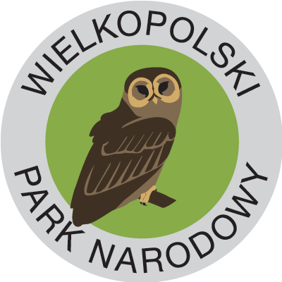

Wielkopolski Park Narodowy
Park Narodowy został tutaj utworzony w roku 1957. Swoją ochroną obejmuje 75,83 km². Znajduje się nad Wartą, na południe od Poznania. Jego symbolem jest puszczyk, czyli najliczniejsza i najczęściej spotykana sowa Europy. 18 obszarów o łącznej powierzchni 260 ha objęto ochroną ścisłą. Park odwiedza ok. 1,2 mln osób rocznie. Wielkopolski Park Narodowy chroni obszar krajobrazu polodowcowego, charakteryzującego się typowymi formami ukształtowania terenu jak moreny, ozy, drumliny oraz choćby jeziora rynnowe. Największym głazem narzutowym tutaj jest Głaz Leśników o obwodzie 10,5 metra. Spotkamy tu 227 gatunków lęgowych i przelotnych.